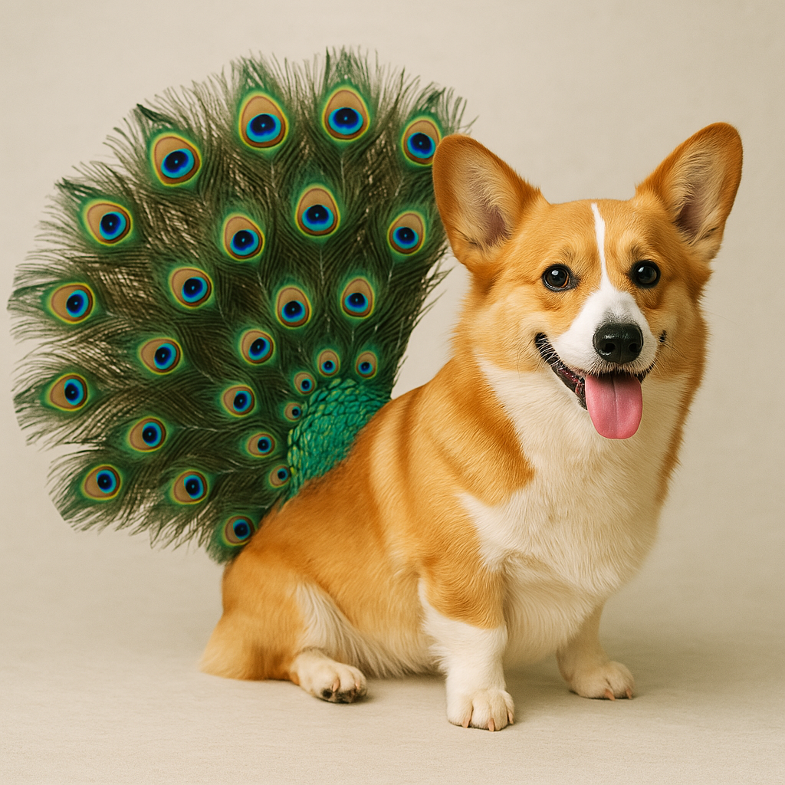
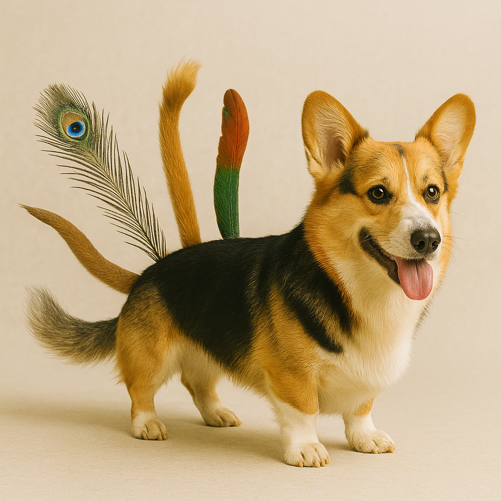
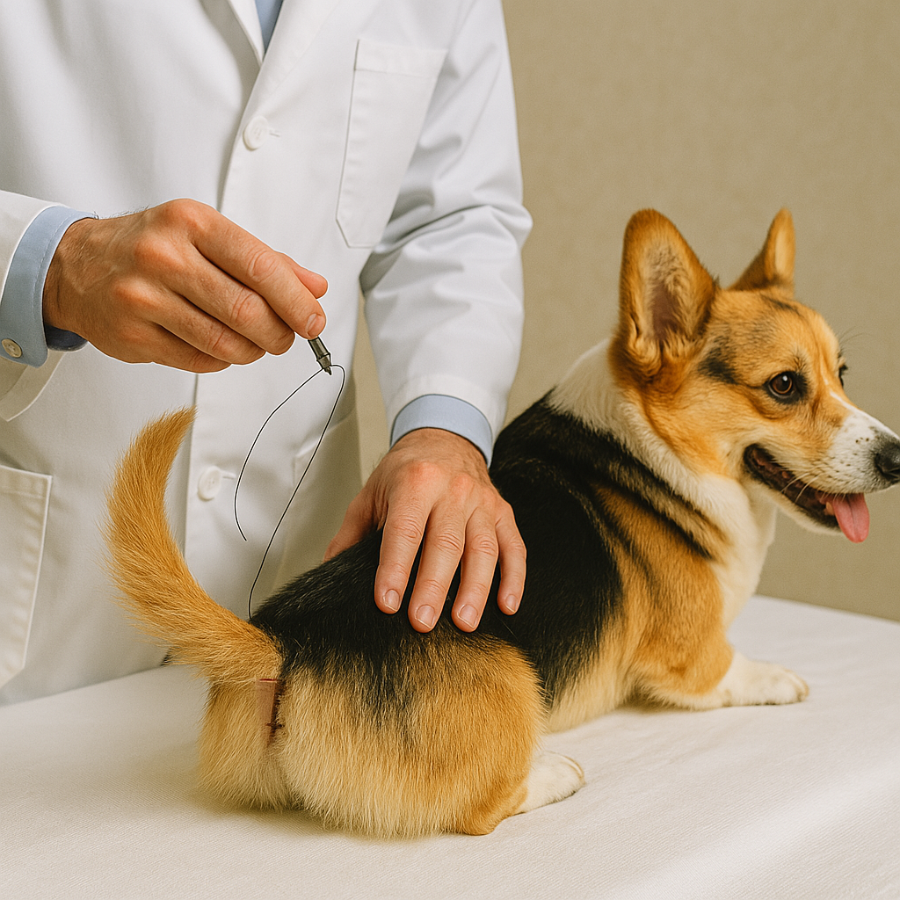
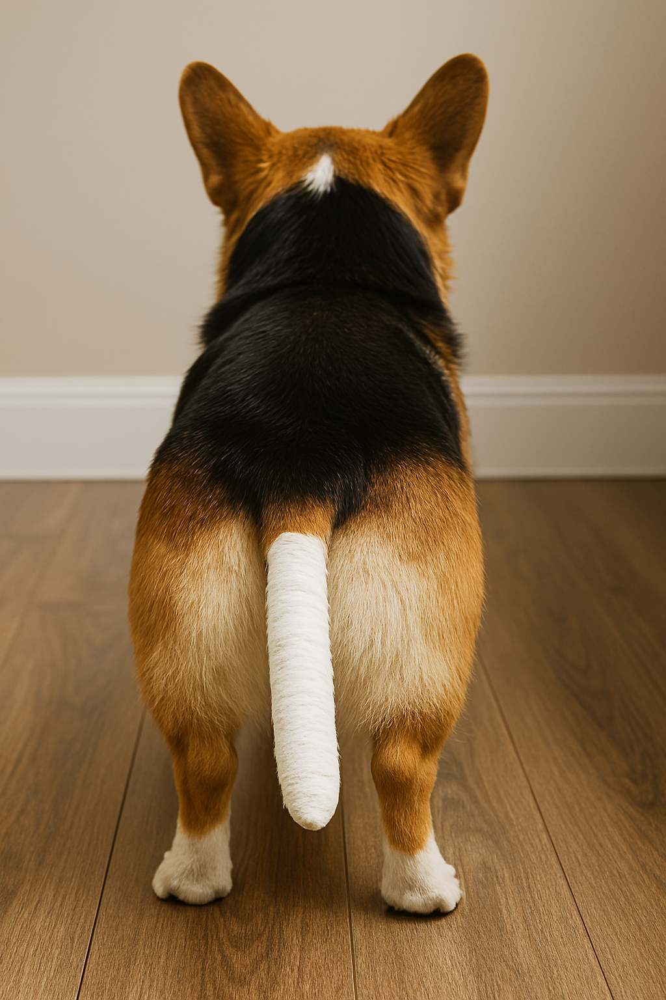
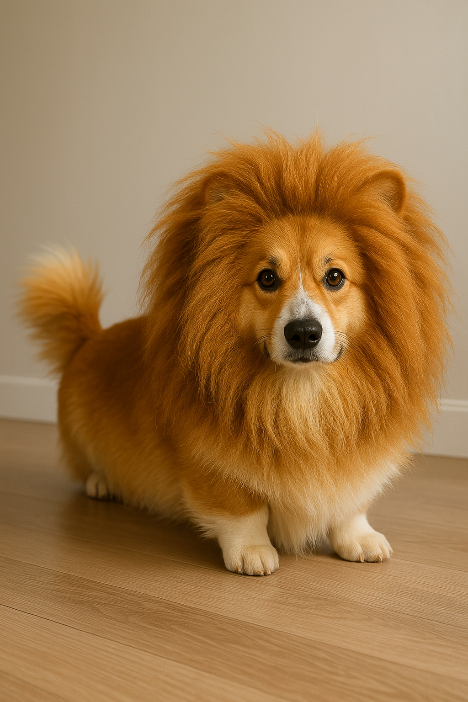
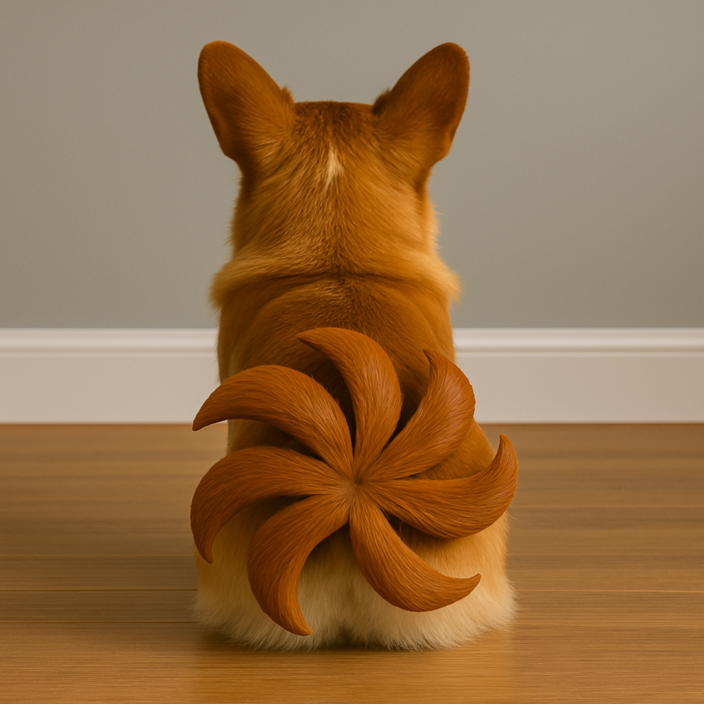

Клиника "Корги & Хвост"
Готовы подарить вашему корги новую жизнь с роскошным хвостом! Мы знаем, что у корги короткие хвосты – но кто сказал, что так должно быть?!
Наши услуги
Подбор хвостов – Индивидуальный подход, возможно, даже хвост павлина!
Консультация – Подберём хвост, который идеально дополнит стиль вашего корги.
Пришивание хвоста – Безболезненно (мы пробовали на себе – вроде норм).
Реабилитация – Гипс? Не нужен! Корги адаптируются мгновенно.
Психологическая поддержка – "Теперь ты не просто корги, а хвостатый корги!"
Отзывы клиентов
"Раньше мой корги был просто батоном на ножках, теперь он – настоящий лев! Спасибо за шикарный хвост!" – Анна П.
"После операции мой корги стал вилять хвостом так быстро, что теперь он мой личный вентилятор. Рекомендую!" – Иван Г.
Записаться на консультацию